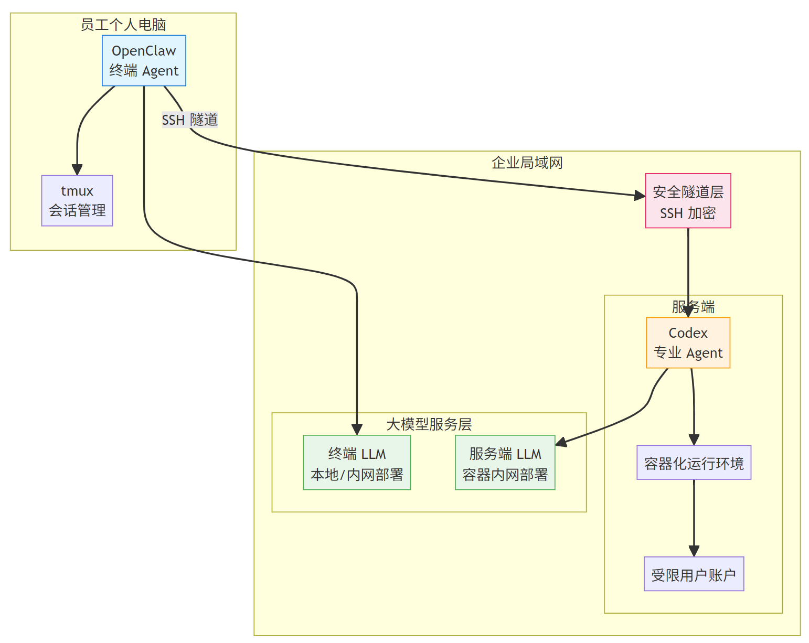
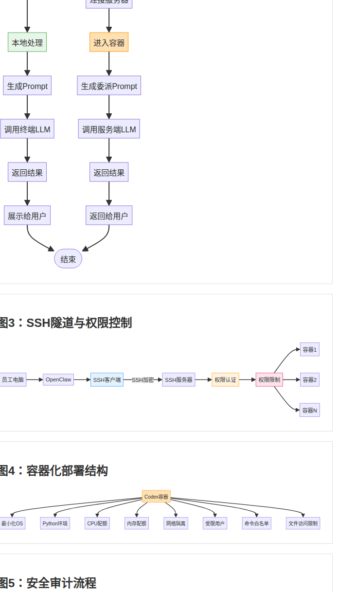
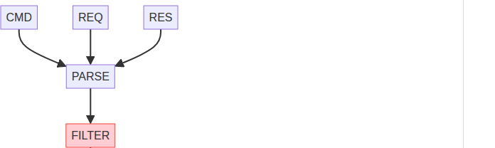
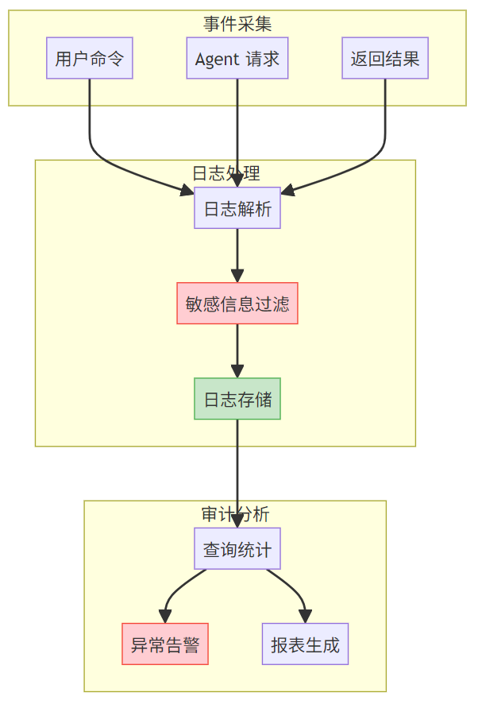

企业AI Agent安全部署与任务调度系统
企业AI Agent安全部署与任务调度系统
背景介绍
随着大语言模型（LLM）技术的快速发展，AI Agent 在企业研发、运维、客服等领域得到广泛应用。然而，当前企业部署 AI Agent 面临诸多挑战：
- 数据泄露风险 - 员工本地 AI Agent 调用外部云服务时，敏感业务数据需要通过公网传输
- 权限难以管控 - AI Agent 难以精细控制其对公司内部系统的访问权限
- 资源分配不均 - 简单任务占用高端算力资源，专业任务缺乏足够算力支撑
- 审计追溯困难 - AI Agent 的操作行为缺乏完整的日志记录
系统架构
本方案采用五层架构设计：
1 | ┌─────────────────────────────────────────────────────────┐ |
附图
图1：系统整体架构示意图

图2：任务委派流程图

图3：SSH隧道与权限控制
图4：容器化部署结构

图5：安全审计流程

核心功能
1. 终端 Agent 模块（OpenClaw）
- 本地会话管理：通过 tmux Session 实现多任务并行管理
- 任务智能路由：内置任务复杂度评估引擎，自动判断任务类型
- 安全连接管理：SSH 客户端，支持密钥认证
- Prompt 工程引擎：自动补全任务上下文
2. 安全隧道层
- SSH 隧道加密：AES-256/ChaCha20 加密算法
- 权限映射与控制：员工账号映射为受限系统用户
- 网络隔离策略：容器网络与公司内部系统隔离
3. 服务端 Agent 模块（Codex）
- 容器化隔离环境：独立容器运行，资源配额限制
- 受限操作环境：普通用户账户，项目隔离
- 专业任务处理：代码开发、调试、审查
4. 大模型服务层
- 本地/内网部署：所有 LLM 推理不离开企业局域网
- 模型调度：根据任务类型自动选择合适模型
5. 安全管理与审计层
- 操作审计：完整记录所有 AI Agent 操作日志
- 敏感信息过滤：主动过滤敏感关键词
- 访问控制：基于角色的权限控制（RBAC）
技术效果
| 效果 | 说明 |
|---|---|
| 数据主权保障 | 所有 LLM 推理均在公司内网完成 |
| 零信任安全 | 最小权限原则 + 网络隔离 + 行为审计 |
| 端云协同 | 终端处理轻量任务，云端处理专业任务 |
| 弹性扩展 | 容器化部署支持快速扩容 |
| 审计追溯 | 完整操作日志，支持事后审计 |
典型应用场景
场景一：研发团队代码开发
- 员工在本地 OpenClaw 中输入需求
- 系统评估任务复杂度
- 简单任务调用本地 LLM，复杂任务委派给服务端 Codex
- 结果返回，全程审计记录
场景二：技术支持
- 员工需要解决线上生产问题
- 通过安全隧道访问内网知识库
- 生成诊断报告
- 敏感操作触发二次验证
附：Docker容器操作权限精细化控制方案
在多用户共享的 Docker 生产环境中，如何实现精细化的容器操作权限控制是一个核心安全挑战。
方案背景
默认的 Docker 访问控制机制存在以下问题：
- 权限过度授予风险：用户加入”docker”组后获得完全权限，可操作所有容器、镜像和卷
- 缺乏操作隔离：不同用户或项目的容器需要相互隔离
- 审计追踪困难：直接使用”docker”命令缺乏有效审计日志
核心设计
核心思想：利用 Linux 系统的 sudo 机制作为强制执行的网关，将自定义的安全脚本作为访问 Docker 的唯一通道。
三大关键组件
1. 权限控制架构
- 确保目标用户不被加入”docker”组
- 通过”sudoers”建立唯一且受限的特权提升路径
2. 安全包装脚本设计
- 命令白名单机制：只允许预设的安全 Docker 命令子集
- 容器名称强制匹配：严格校验操作对象是否为允许的特定容器
- 危险参数过滤：拦截特权参数和危险操作
- 执行身份验证：确保只有通过 sudo 机制才能执行
3. sudoers 规则配置
1 | [目标用户] ALL=(ALL) NOPASSWD: [脚本绝对路径] |
该规则允许目标用户无需密码、以 root 身份执行特定脚本，但不能执行其他特权命令。
安全特性
- 强制访问控制：所有 Docker 操作必须经过安全脚本过滤，无法绕过
- 最小权限原则：用户只能操作指定容器，无法影响其他资源
- 完整审计能力：所有 sudo 操作记录到系统日志
- 纵深防御：可与 Docker 安全特性（非 root 用户、Seccomp 等）结合
操作流程
- 环境准备：确认目标用户不在”docker”组中
- 脚本部署：创建安全包装脚本，设置权限为 755
- sudoers 配置：使用”visudo”添加精确权限规则
- 用户引导：指导用户使用”sudo [脚本路径]”方式执行命令
- 容器规范：确保目标容器遵循特定命名或标签规范
应用场景
- 多租户环境：不同团队或项目共享同一 Docker 主机
- 生产环境操作：限制运维人员只能操作其负责的容器
- CI/CD 流水线：为自动化工具提供受限的 Docker 操作权限
- 开发测试环境：开发人员只能操作自己的开发容器
该方案通过 Linux 系统的标准权限机制实现了 Docker 容器操作的精细化管理，是平衡安全性与可用性的有效实践。
本文整理自专利交底书
All articles on this blog are licensed under CC BY-NC-SA 4.0 unless otherwise stated.